«Хладнокровное убийство»
Трумен Капоте, 1966. Документальный роман об убийстве семьи в американской глубинке. С этой книги часто отсчитывают современный true crime.
Книга · материал: тяжёлыйКоротко о том, про что каждый подкаст и в каком он тоне. Ищите по названию или выбирайте тему.
18+. Подкасты посвящены реальным преступлениям, материалы бывают тяжёлыми. Если тема для вас болезненна, выбирайте выпуски осторожно.
Три вопроса, и сайт предложит, с чего начать.
Клавиши: / поиск · r случайный · t тема · f избранное · цифры — темы (10 и дальше: цифры подряд, например 1 и 1) · Esc закрыть окно
Статистика и значки считаются по вашим отметкам. Данные хранятся только в этом браузере.
Личные подборки вроде «Слушать в дороге» или «Перед сном». Видны только вам и хранятся в браузере.
Личные подборки вроде «Слушать в дороге» или «Перед сном». Видны только вам и хранятся в браузере.
Термины, викторина, история жанра, книги и правила этики. Всё, что помогает лучше понимать, о чём говорят подкасты.
True crime — документальный жанр о реальных преступлениях: убийствах, исчезновениях, мошенничестве, громких судебных делах. Авторы опираются на архивы, судебные материалы и журналистские расследования.
Истории о настоящих преступлениях существовали задолго до подкастов: в книгах, газетах, на радио и телевидении. Подкаст «Serial» (2014) сделал именно этот формат массовым.
Исследователи называют несколько возможных причин: любопытство к опасности, которую можно изучать со стороны, желание понять мотивы людей, интерес к тому, как работает правосудие. Единого объяснения нет.
Короткая шкала: как истории о реальных преступлениях пришли в подкасты. Сначала общая картина, ниже — российский контекст.
Сборники и газетные отчёты о громких процессах, например английский «Newgate Calendar». Читатели уже тогда интересовались реальными делами.
Криминальные радиопередачи в США. Истории о преступлениях впервые звучат в эфире.
Выходит «Хладнокровное убийство» Трумена Капоте. Документальный роман задаёт образец для книг жанра.
На американском ТВ появляется «Unsolved Mysteries», а фильм «Тонкая голубая линия» показывает, что документалистика может повлиять на судьбу осуждённого.
Подкаст «Serial» делает формат массовым: один случай рассказывают на протяжении всего сезона.
Выходят сериал «Making a Murderer» и подкаст «My Favorite Murder». Жанр делится на документальные расследования и разговорные подкасты с юмором.
Русскоязычные тру-крайм подкасты становятся заметным направлением: от судебных разборов до разговорных выпусков. Именно их собирает этот каталог.
У нас жанр шёл своим путём: от судебной хроники и советских детективов к телепередачам и подкастам.
Судебная реформа 1864 года вводит открытые заседания и суд присяжных. Газеты начинают публиковать судебные отчёты, а публичные процессы становятся темой для чтения и споров. Известным судебным оратором того времени был Анатолий Кони.
На экраны выходит «Следствие ведут ЗнаТоКи»: вымышленные дела, но формат милицейского расследования надолго становится для зрителей образцом. Майора Томина играет Леонид Каневский.
В годы гласности о преступлениях начинают говорить открыто, в том числе о серийных убийцах: громким делом стало дело Андрея Чикатило, арестованного в 1990 году. Криминальная хроника переходит на телевидение, а в 1990-е появляются целые рубрики и передачи о преступности.
Начинает выходить документальный цикл «Криминальная Россия» Давида Гамбурга. Он почти двадцать лет остаётся на экранах и формирует образ «лихих девяностых».
На НТВ стартует «Следствие вели…» с Леонидом Каневским: документальные истории о громких делах советской эпохи в формате расследования.
Тру-крайм приходит в русскоязычные подкасты: появляются проекты с разным тоном, от судебных разборов до разговорных выпусков с юмором. Многие из них собраны в нашем каталоге.
Подборка для знакомства с жанром, это не рейтинг. Метки тяжести субъективны, как и в карточках подкастов; критерии оценки.
Трумен Капоте, 1966. Документальный роман об убийстве семьи в американской глубинке. С этой книги часто отсчитывают современный true crime.
Книга · материал: тяжёлый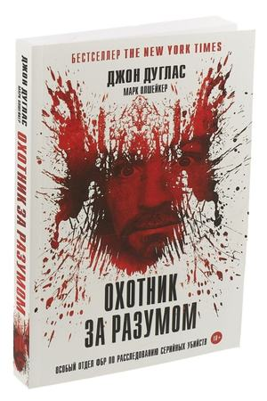
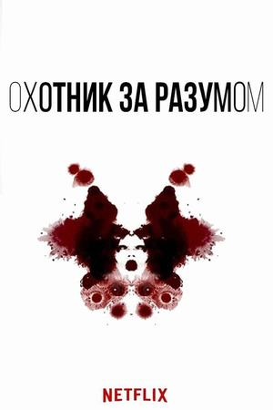
Джон Дуглас и Марк Олшейкер, 1995. Воспоминания сотрудника ФБР, одного из создателей криминального профилирования.
Книга · материал: тяжёлыйЭрик Ларсон, 2003. История Всемирной выставки 1893 года в Чикаго и серийного убийцы, действовавшего в те же годы.
Книга · материал: средний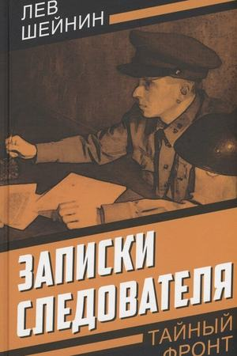
Лев Шейнин. Рассказы советского следователя о реальных делах. Читать стоит с поправкой на эпоху, в которую они написаны.
Книга · материал: лёгкий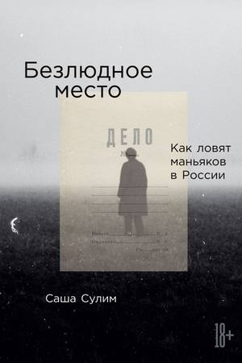
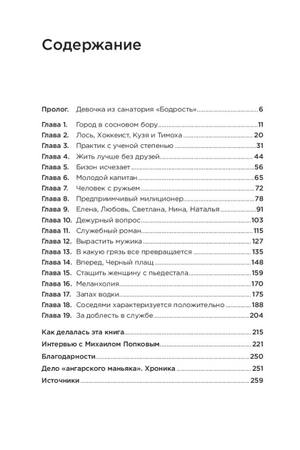
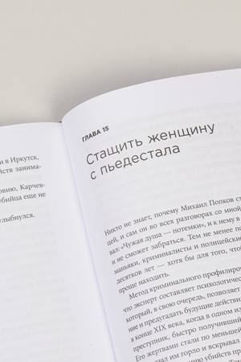
Саша Сулим, 2023. Журналистка рассказывает, как в России расследуют дела серийных убийц; в центре книги история ангарского маньяка Попкова.
Книга · материал: тяжёлый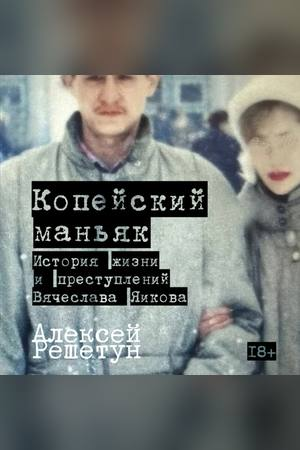
Алексей Решетун, 2025. Судмедэксперт разбирает дело Вячеслава Яикова: как быть с преступником, который не осознавал своих поступков из-за болезни.
Книга · материал: тяжёлый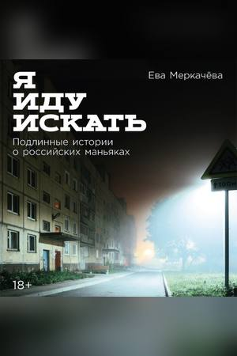
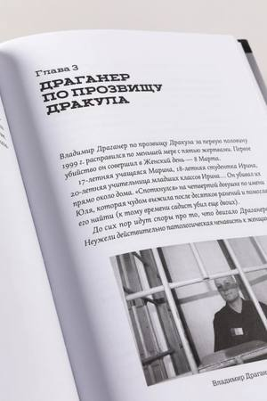
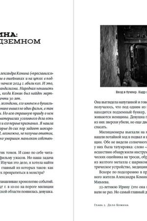
Ева Меркачёва, 2025. Подлинные истории о российских маньяках, рассказанные журналисткой.
Книга · материал: тяжёлый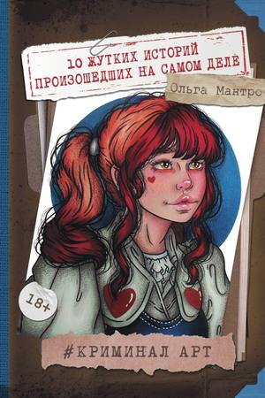
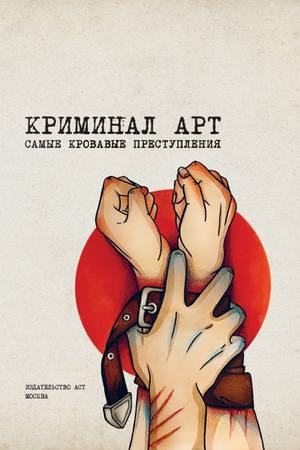
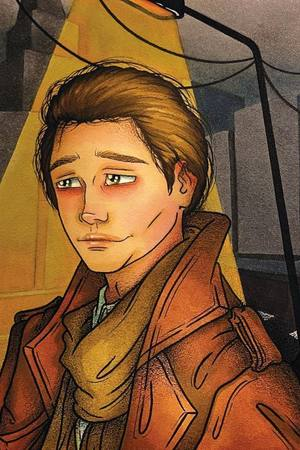
Ольга Мантро, 2023. Книга по мотивам её видеоформата, где реальные истории сопровождаются рисунками.
Книга · материал: средний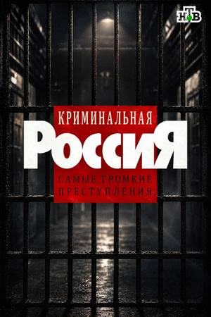
Давид Гамбург, с 1995 года. Документальный цикл о преступности 1990-х, на котором выросло целое поколение зрителей.
Документальный цикл · материал: тяжёлый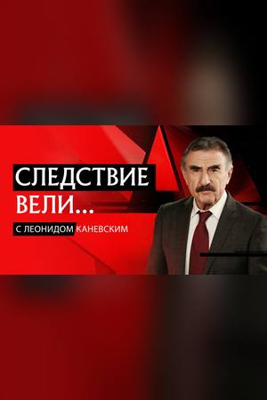
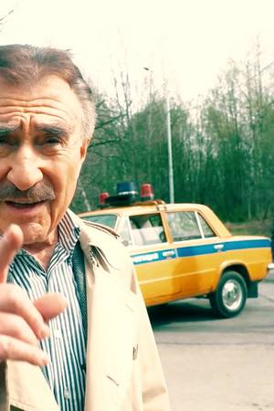
НТВ, с 2006 года. Телепередача о громких делах в формате расследования, с инсценировками и Леонидом Каневским в роли ведущего.
Телепередача · материал: средний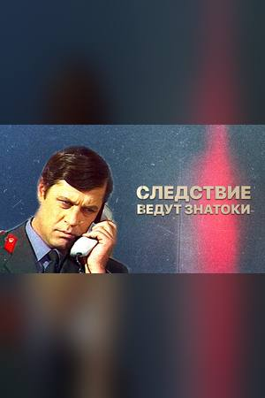
СССР, с 1971 года. Это вымышленные дела, а не документалистика, но этот сериал сформировал образ милицейского расследования.
Сериал (художественный) · материал: лёгкий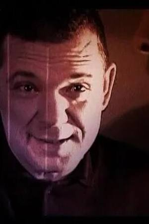
Телеканал «Звезда», 2011. Цикл документальных фильмов о знаменитых уголовных делах советской эпохи: о преступниках и о сыщиках, которые их искали, и о том, как работали следователи без современных технологий.
Документальный цикл · материал: среднийСлова, которые часто звучат в подкастах. Объяснения упрощены и не заменяют юридическую консультацию. За основу взято российское право, в других странах правила могут отличаться.
Это разговорные слова и жаргон, а не юридические термины: в протоколах и приговорах их не используют.
Ситуации, в которых нужно выбрать выход (а иногда идеального выхода нет), мифы и факты по терминам из глоссария. Зубрить определения не нужно, важно понимать, как всё работает.
Метка в карточке показывает, насколько тяжёл материал подкаста в целом. Оценка субъективна и ставится редакцией по преобладающим темам, поэтому в отдельных выпусках всё может быть иначе. Ориентиры такие:
Мошенничества, аферы и авантюры, городские легенды. Жертв насилия в центре историй нет.
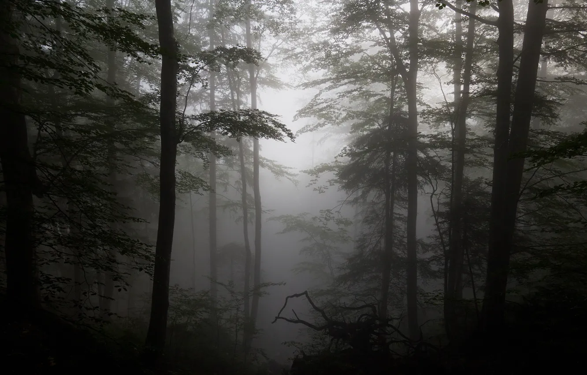
Нераскрытые дела, исчезновения, секты. Насилие упоминается, но без подробных описаний.
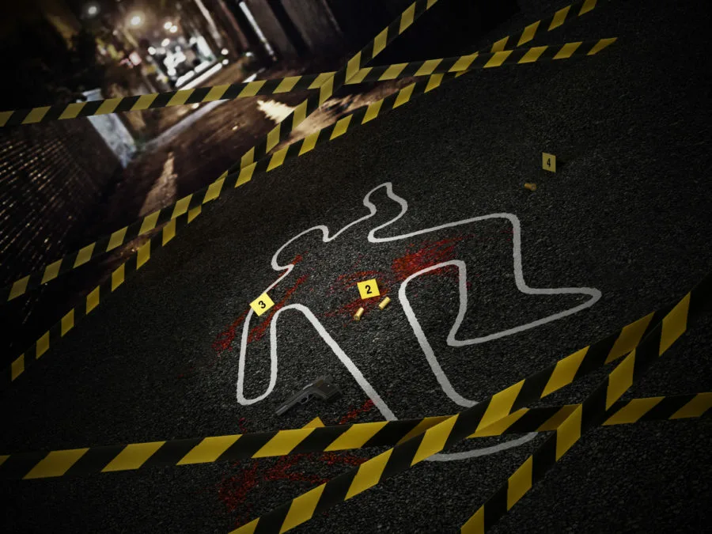
Серийные убийства, насилие над детьми, подробные описания жестокости.
Шкала «Юмор» оценивается отдельно и описывает только манеру подачи. Шутливый подкаст не обязательно лёгкий: тема дела от тона не меняется. Если сомневаетесь, прочитайте описание выпуска и предупреждения перед прослушиванием.
Тру-крайм бывает тяжёлым, и это нормально. Несколько советов:
Несколько правил, которые помогают слушать и обсуждать реальные дела уважительно.
За каждым делом стоят пострадавшие и их близкие. О преступлении можно рассказывать без смакования подробностей, из-за которых трагедия превращается в развлечение.
Подозреваемый, обвиняемый и осуждённый — разные статусы. Пока приговор не вступил в силу, человек считается невиновным, а подкаст не заменяет суд.
Не разыскивайте участников дела, не выкладывайте адреса и фото, не обвиняйте людей в комментариях. Догадки слушателей уже приводили к травле невиновных.
Подкаст — это пересказ автора, а не документ. Сверяйтесь с судебными решениями и материалами СМИ: ведущие могут ошибаться, а дело с тех пор могли пересмотреть.
Юмор в жанре спорный. Шутки над собственной реакцией ведущих и над страданиями людей — разные вещи. Если второе вам неприятно, выбирайте подкасты с серьёзным тоном.
Если выпуски вызывают тревогу, сделайте паузу. Подробнее в разделе «Для чувствительных слушателей».
В каталог попадают подкаст-проекты, существование и авторство которых мы смогли проверить. Рейтингов нет: мы не измеряем популярность.
Описания краткие и составлены по открытым источникам. Состав ведущих и ссылки со временем меняются, сверяйтесь со страницей подкаста.
Не нашли свой любимый или нишевый подкаст? Пришлите ссылку, и мы рассмотрим его для каталога. Берём русскоязычные проекты о реальных преступлениях, у которых можно проверить авторов и официальную страницу.